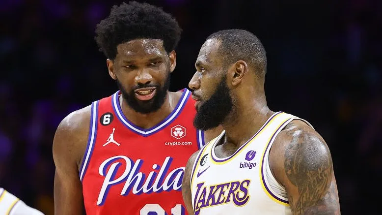

DAILY FEEDS

'This is a heartbreaking night': Sports world reacts to death of soccer journalist Grant Wahl
Illustrated, which he described as a dream. He worked there for 24 years, most prominently covering soccer and college basketball.
CLICK TO KNOW MORE

76ers blow 9-point lead in final :34 seconds, then hang on to beat Lakers in OT
It was almost a legendary comeback win for the Lakers — and a legendary blown lead for the 76ers.